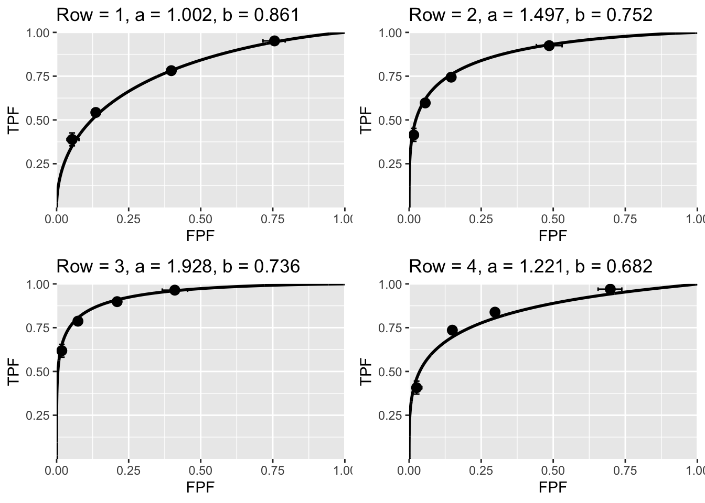
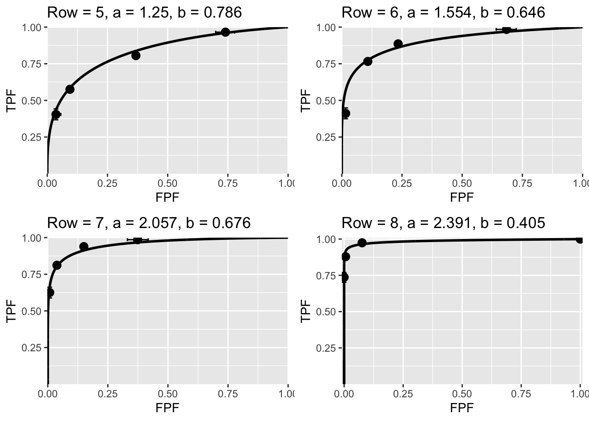
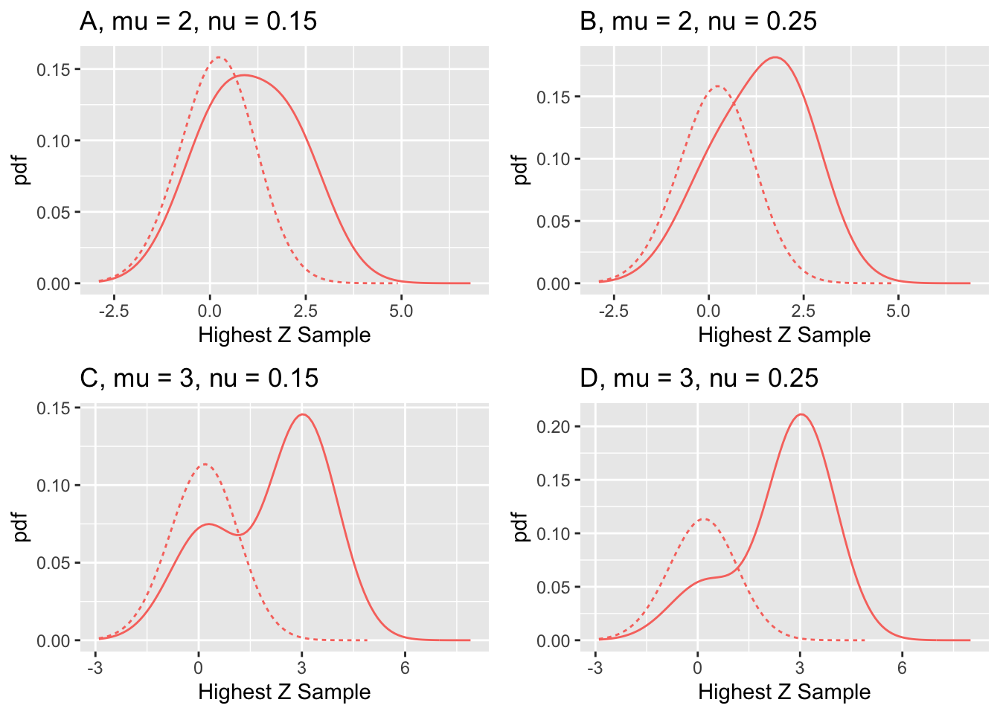

Chapter 33 Evidence for the RSM
33.1 How much finished
70%
33.2 Introduction
This chapter details evidence for the validity of the radiological search model (RSM). Briefly, these are:
- Its correspondence to the empirical (i.e., measurement based) Kundel-Nodine model of radiological search.
- In special cases, it reduces to being indistinguishable from the binormal model.
- It explains:
- The empirical observation (Green and Swets 1966) that most ROC datasets are characterized by b-parameter \(b < 1\).
- The empirical observation (Swets, Tanner Jr, and Birdsall 1961) that the \(b\) tends to decrease as contrast increases.
- The empirical observation (Swets, Tanner Jr, and Birdsall 1961), that the difference in means of the two pdfs divided by the difference in standard deviations is roughly constant.
- It explains data degeneracy, i.e., no interior data points, sometimes observed especially with expert observers.
- It predicts FROC/AFROC and LROC curves that better fit real datasets.
As described in TBA Chapter 20, the CBM explains 3(a) and 4 while the bigamma model (Dorfman et al. 1997) explains 3(c).
33.3 Correspondence to the Kundel-Nodine model
The strongest evidence for the validity of the RSM is its close correspondence to the Kundel-Nodine model of radiological search (Kundel and Nodine 1983, 2004; Nodine and Kundel 1987; Kundel et al. 2007), which in turn is derived from eye-tracking measurements made on radiologists while they perform diagnostic tasks. These show that radiologists identify suspicious regions in a short time and this ability corresponds to the \(\lambda', \nu'\) parameters of the RSM. Having found suspicious regions, the next activity uncovered by eye-tracking measurements is the detailed examination of each suspicious region in order to determine if it is a significant finding. This is where the z-sample is calculated, and this process is modeled by two unit normal distributions separated by the \(\mu\) parameter of the RSM.
Other ROC models do not share this close correspondence. The CBM model comes closest – it models the probability that lesions are found, which is part of search performance, but the ability to avoid finding NLs is not modeled. Like other ROC models, CBM predicts that the point (1,1) is continuously accessible to observer, which implies zero search performance, TBA Fig. 17.6.
33.4 The RSM can mimic the binormal model
ROC models assume that every case provides a finite decision variable sample. This is what permits the observer to continuously move the operating point to (1,1). According to the RSM a decision sample on every case is possible if \(\lambda\) is large, since in the limit \(\lambda \rightarrow \infty\) every case has at least one latent NL. It turns out, as shown next, that it is not necessary to go to infinite values of \(\lambda\) to produce RSM-generated ratings data that are indistinguishable from those generated by the binormal model. Values of \(\lambda\) around 1 to 10 are sufficient to demonstrate this fact. A factor that helps showing the indistinguishability is that the binormal model is remarkably resilient to departures from normality, its robustness property, demonstrated in (Hanley 1988). It literally takes huge datasets, numbering in the thousands of cases, to show departures from strict normality.
The ROC ratings datasets used in the following examples were generated by the RSM. The parameter values are listed in Table 33.1. RSM generated FROC datasets, in each case 500 non-diseased and 700 diseased cases were used, were converted to (highest rating) ROC datasets, each dataset was binned into 5 bins and then analyzed by an online Java program (Eng 2003) which implements Metz’s ROCFIT program, TBA Chapter 06, yielding the binormal parameters \(a, b\) and the p-value of the chisquare goodness of fit statistic. Shown next are the binormal-model-fitted ROC curves to these datasets as well as the corresponding \(a,b\) parameters. The value of Row corresponds to the row number in Table 33.1.


FIGURE 33.1: RSM generated ROC points and corresponding binormal model fitted curves.
Fig. 33.1: ROC operating points obtained using RSM ratings-generator and corresponding binormal model fitted curves. The \(a, b\) parameters are shown in the figure labels. The value of Row corresponds to the row number in Table 33.1. The plots show that over a wide range of parameters RSM generated ROC data is fitted reasonably by the binormal model. The p-values of the goodness of fit statistic, see Table 33.1, are all in the range of what is considered an acceptable fit to a model. As far as the binormal model-fitting software is concerned, the counts data arose from two effectively normal distributions (i.e., apart from the intrinsic uncertainty due to allowed arbitrary monotone transformations). Even with the large number of cases, sampling variability affects the binormal model fits: e.g., the binormal model curves in plots labeled “2” and “4” differ only in seed values. The hooks near (1,1) in the binormal ROC fitted curves are not easily visible but are nevertheless present as each of the b-parameters in Table 33.1 is less than unity. The error bars are exact 95% binomial confidence intervals on the operating points.
Since the binormal model has been used successfully for almost six decades, the ability to the RSM to mimic it is an important justification for the validity of the RSM.
| Row | s | L | \(\mu\) | \(\lambda\) | A | a | b | Az | pVal |
|---|---|---|---|---|---|---|---|---|---|
| 1 | 1 | 1 | 2 | 10 | 0.787 | 1.002 | 0.861 | 0.776 | 0.223 |
| 2 | 1 | 1 | 2.5 | 10 | 0.879 | 1.497 | 0.752 | 0.884 | 0.46 |
| 3 | 1 | 1 | 3 | 10 | 0.938 | 1.928 | 0.736 | 0.94 | 0.198 |
| 4 | 2 | 1 | 2.5 | 10 | 0.879 | 1.221 | 0.682 | 0.843 | 0.12 |
| 5 | 2 | 2 | 2 | 10 | 0.844 | 1.25 | 0.786 | 0.837 | 0.903 |
| 6 | 2 | 2 | 2.5 | 10 | 0.922 | 1.554 | 0.646 | 0.904 | 0.592 |
| 7 | 2 | 2 | 3 | 10 | 0.965 | 2.057 | 0.676 | 0.956 | 0.009 |
| 8 | 2 | 2 | 3 | 1 | 0.985 | 2.391 | 0.405 | 0.987 | 0.988 |
Table 33.1: Results of simulating ROC ratings tables using seeds and RSM parameter values specified in columns 2 – 5 and fitting each ratings table using the binormal model. The corresponding binormal model fitted ROC curves are shown in Fig. 33.1. The number of non-diseased cases was 500, the number of diseased cases was 700, and the reporting threshold \(\zeta_1 = -1\).
Of interest in Table 33.1 is the observation that \(b < 1\), and the qualities of the fits are quite good (p > 0.001 is generally considered acceptable, see (Press et al. 2007), 3rd edition, page 779).
One expects \(A \equiv AUC_{ROC}^{RSM}\) to exceed the binormal fitted value \(A_z\). This has to do with the “proper” property of the RSM-ROC curve, which implies an ideal observer, while the binormal model predicts “improper” ROC curves, TBA Chapter 20. For rows 2 and 3, the expected orderings are reversed but the magnitudes of the discrepancies are small. This is because RSM-predicted values are not subject to sampling variability as they are derived by numerical integration, whose estimation error is very small compared to sampling error. In contrast, the estimates of \(A_z\) are subject to sampling variability, even though large numbers of cases were used. Row-4 repeats Row-2 with a different value of seed: this time the expected ordering is observed \(A > Az\).
33.5 Empirical observations
As summarized previously, there are three empirical observations regarding binormal parameters:
- \(b < 1\).
- \(b\) decreases as \(a\) increases.
- For fixed experimental conditions \(R_{Swets} \equiv \frac {a}{1-b}\) is approximately constant.
33.6 Explanation for \(b < 1\)
The RSM-predicted ROC curves are consistent with empirical observations (Green and Swets 1966) that observed ROC data, when fitted by the unequal variance binormal model, yield \(b < 1\), implying that the diseased case pdf is wider than the non-diseased case pdf. The RSM provides an explanation for this: diseased cases yield two types of z-samples, namely NL z-samples from a zero-centered unit variance normal distribution and LL z-samples from a \(\mu\)-centered unit variance normal distribution. The resulting mixture distribution is expected, when one attempts to fit it with a normal distribution, to yield standard deviation for diseased cases greater than 1, or, equivalently, \(b < 1\). The fit is not expected to be ideal, but it is known that for relatively small numbers of cases, as is true with clinical data sets, it is difficult to detect deviations from strict normality; indeed, the binormal model is quite robust with respect to deviations from strict normality (Green and Swets 1966). Several examples of this were evident in the goodness of fit p-values in Table 33.1, which show good binormal fits to RSM generated data even with 1200 cases.

FIGURE 33.2: pdfs along with the parameter values. The dotted curves correspond to non-diseased cases while solid curves correspond to diseased cases.
Fig. 33.2: This figure provides an explanation for empirical observation \(b < 1\). Displayed are pdfs along with the parameter values. For all plots \(\lambda = 1\) and \(L_{max} = 1\). The dotted curves correspond to non-diseased cases while the solid curves correspond to diseased cases. The solid curves are broader than the dotted ones. In (A) and (B) the solid curve is noticeably broader. In (D) there is a hint of a secondary peak at zero, which is quite prominent in (C), which corresponds to the largest \(\mu\) and the smallest \(\nu\). In each case the resulting mixture distribution is expected to lead to a larger estimate of standard deviation of the assumed normal distribution of diseased cases relative to non-diseased cases.
33.7 Explanation of Swets et al observations
More than 55 years ago, (Swets, Tanner Jr, and Birdsall 1961) noticed in two non-medical imaging contexts:
The standard deviation of the non-diseased distribution divided by the standard deviation of the diseased distribution, tended to decrease as contrast increased. In binormal parameter terms, \(b\) decreases as \(a\) increases.
The ratio \(R_{Swets} \equiv \Delta(mean) / \Delta(\sigma)\), henceforth referrd to as the Swets Ratio, has been conjectured to be approximately constant for a fixed set of experimental conditions. \(\Delta(mean)\) is the separation of the means of the two distributions and \(\Delta(\sigma)\) is the difference of the two standard deviations (diseased minus non-diseased). In binormal parameter terms, \(R_{Swets} \equiv \frac{a}{1-b}\) is supposed to be approximately constant.26
The second observation implies a peculiar relation between the \(a\) and \(b\) parameters. Recall Figure 13.1, Plot A, which shows the definitions of the binormal \(a\) and \(b\) parameters. The diseased pdf has unit standard deviation, while the non-diseased has standard deviation \(b < 1\), and the separation of the two distributions is \(a\). The constancy of Swets Ratio implies that as \(a\) increases \(b\) decreases (which implies that the first Swets observation is actually contained in the second) so as to increase \(1-b\) by the same factor. Since \(b\) is a standard deviation, i.e., \(b > 0\), it can only shrink so far, and eventually, for large enough \(a\), the presumed constancy must fail. In particular, as \(b\) approaches unity (corresponding to the equal variance binormal model) the ratio must approach infinity. Nevertheless, it is interesting to use the RSM to test this hypothesis.
Testing over a range of \(\mu\) using binormal model maximum likelihood fitting is direct but cumbersome and subject to failure as it depends on convergence of the binormal model algorithm, which is problematical for larger values of \(\mu\), which lead to degenerate datasets. Instead, the following method was used. The search model predicted pdfs were normalized so that they individually integrated to unit areas over the continuous sections. Normalization was accomplished by dividing the non-diseased pdf by the x-coordinate of the end-point, and the diseased pdf by the y-coordinate of the end-point. The means and standard deviations of these distributions were calculated by numerical integration. Since the binormal model is not used, the effective binormal parameters will henceforth be referred to as \(a_{eff}\) and \(b_{eff}\). In this notation, the Swets Ratio is \(R_{Swets} \equiv \frac{a_{eff}}{1-b_{eff}}\).
The following equations describe the calculations involved, which are implemented in the code:
\[\begin{equation} \left. \begin{aligned} \left \langle x \right \rangle_N = & \int_{-\infty}^{\infty} xf_N(x) dx \\ \left \langle x \right \rangle_D = & \int_{-\infty}^{\infty} xf_D(x) dx \\ \sigma_N^2 = & \int_{-\infty}^{\infty} \left (x - \left \langle x \right \rangle_N \right )^2f_N(x) dx \\ \sigma_D^2 = & \int_{-\infty}^{\infty} \left (x - \left \langle x \right \rangle_D \right )^2f_D(x) dx \\ \end{aligned} \right \} \tag{33.1} \end{equation}\]
Subscripts \(N\) and \(D\) refer to non-diseased and diseased cases, respectively, while \(f(x)\) is the normalized \(pdf\) function. The effective binormal parameters are defined as:
\[\begin{equation} \left. \begin{aligned} a_{eff} = & \frac{\left \langle x \right \rangle_D - \left \langle x \right \rangle_N } {\sigma_D}\\ b_{eff} = & \frac{\sigma_N}{\sigma_D}\\ R_{Swets} = & \frac{a_{eff}}{1 - b_{eff} } \end{aligned} \right \} \tag{33.2} \end{equation}\]
Varying experimental conditions were simulated by individually varying two of the three parameters of the RSM under the constraint that the RSM predicted AUC (assuming \(\zeta_1 = -\infty\)) remains constant at a specified value. Without this constraint, variation of a single parameter, e.g., \(\mu\), would cause AUC to vary over the entire range 0.5 to 1, which is uncharacteristic of radiologists interpreting the same case set. Rather, we assume that observers characterized by different RSM parameters nevertheless converge to roughly the same RSM-AUCs. In other words, they trade deficiencies in one area (e.g., finding too many NLs, large \(\lambda\)) with increased performance in other areas (e.g., finding more lesions, i.e., larger \(\nu\), and/or greater perceptual signal to noise ratio, i.e., larger \(\mu\)).
In the code, the number of lesions per diseased case was set to one. The function FindParamFixAuc() finds the missing RSM parameter, indicated by initializing it with NA. The function effectiveAB() calculates the separation \(a_{eff}\) and standard deviation ratio \(b_{eff}\) (non-diseased to diseased) of the two distributions, after normalizing each to unit area.
Perhaps the best way of illustrating the near constancy of the Swets Ratio is by fixing \(\lambda = 2\) and varying \(\mu\) and \(\nu\) to keep AUC constant, as in Table 33.2. This results in a large range over which \(\mu\) is varied, from 2.000 to 5.000. The RSM \(\mu\) parameter controls the separation of non-diseased and diseased pdfs and as such directly affects the binormal \(a_{eff}\) parameter. Hence the corresponding large range for \(a_{eff}\), from 0.7717 to 1.3042. The RSM \(\nu'\) parameter is relatively constant, ranging from 0.4000 to 0.4556. Note that the physical \(\lambda'\) and \(\nu'\) (i.e., primed) quantities are shown in the table. This table shows that the Swets Ratio is near constant, ranging from 2.162 to 3.136. Note the increase in the ratio for the largest value of \(b_{eff}\), i.e., that closest to unity, which, as noted earlier, is as expected.
| \(AUC\) | \(\mu\) | \(\lambda'\) | \(\nu'\) | \(a_{eff}\) | \(b_{eff}\) | \(\frac{a_{eff}}{1-b_{eff}}\) |
|---|---|---|---|---|---|---|
| 0.7 | 2.000 | 1.0000 | 0.4556 | 0.7717 | 0.7539 | 3.136 |
| 0.7 | 2.214 | 0.9032 | 0.4377 | 0.8136 | 0.7107 | 2.812 |
| 0.7 | 2.452 | 0.8158 | 0.4244 | 0.8608 | 0.6671 | 2.585 |
| 0.7 | 2.714 | 0.7368 | 0.4148 | 0.9131 | 0.6236 | 2.426 |
| 0.7 | 3.005 | 0.6655 | 0.4083 | 0.9700 | 0.5810 | 2.315 |
| 0.7 | 3.327 | 0.6011 | 0.4042 | 1.0310 | 0.5400 | 2.241 |
| 0.7 | 3.684 | 0.5429 | 0.4020 | 1.0956 | 0.5010 | 2.195 |
| 0.7 | 4.079 | 0.4903 | 0.4008 | 1.1629 | 0.4642 | 2.170 |
| 0.7 | 4.516 | 0.4429 | 0.4003 | 1.2327 | 0.4298 | 2.162 |
| 0.7 | 5.000 | 0.4000 | 0.4000 | 1.3042 | 0.3978 | 2.166 |
In Table 33.3 the parameter \(\nu = 1\) is held fixed while \(\mu\) and \(\lambda\) are varied. This time \(a_{eff}\) is relatively constant, ranging from 0.5914 to 0.7007, while \(b_{eff}\) is very close to unity, ranging from 0.9518 to 0.9767, leading to the very large and varying values of the Swets Ratio, ranging from 14.54 to 25.96.
| \(AUC\) | \(\mu\) | \(\lambda'\) | \(\nu'\) | \(a_{eff}\) | \(b_{eff}\) | \(\frac{a_{eff}}{1-b_{eff}}\) |
|---|---|---|---|---|---|---|
| 0.7 | 0.9453 | 1.058 | 0.6115 | 0.5914 | 0.9767 | 25.43 |
| 0.7 | 0.9901 | 1.208 | 0.6285 | 0.6062 | 0.9763 | 25.61 |
| 0.7 | 1.0368 | 1.379 | 0.6454 | 0.6211 | 0.9760 | 25.83 |
| 0.7 | 1.0853 | 1.576 | 0.6622 | 0.6360 | 0.9755 | 25.96 |
| 0.7 | 1.1354 | 1.801 | 0.6787 | 0.6504 | 0.9748 | 25.78 |
| 0.7 | 1.1866 | 2.061 | 0.6947 | 0.6639 | 0.9735 | 25.02 |
| 0.7 | 1.2389 | 2.360 | 0.7103 | 0.6761 | 0.9711 | 23.42 |
| 0.7 | 1.2920 | 2.706 | 0.7253 | 0.6866 | 0.9672 | 20.93 |
| 0.7 | 1.3457 | 3.107 | 0.7396 | 0.6948 | 0.9610 | 17.80 |
| 0.7 | 1.3999 | 3.572 | 0.7534 | 0.7007 | 0.9518 | 14.54 |
In Table 33.4, the final example, \(\mu = 2\) is held constant but the other two parameters \(\lambda, \nu\) are varied to keep AUC constant. This time the inverse dependence between \(a_{eff}\) and \(b_{eff}\) is not observed: while \(a_{eff}\) decreases monotonically as one moves down the column, \(b_{eff}\) shows a minimum around the seventh row of this table. Except for the first column, which corresponds to the largest value of \(b_{eff}\), the Swets Ratio is near constant.
In practice datasets with \(b > 1\) are occasionally observed. These would lead to a negative Swets Ratio.
| \(AUC\) | \(\mu\) | \(\lambda'\) | \(\nu'\) | \(a_{eff}\) | \(b_{eff}\) | \(\frac{a_{eff}}{1-b_{eff}}\) |
|---|---|---|---|---|---|---|
| 0.7 | 2 | 0.05000 | 0.4031 | 1.6629 | 0.8967 | 16.091 |
| 0.7 | 2 | 0.07722 | 0.4048 | 1.5425 | 0.8632 | 11.272 |
| 0.7 | 2 | 0.11927 | 0.4074 | 1.4030 | 0.8275 | 8.132 |
| 0.7 | 2 | 0.18420 | 0.4113 | 1.2531 | 0.7940 | 6.084 |
| 0.7 | 2 | 0.28449 | 0.4172 | 1.1043 | 0.7675 | 4.750 |
| 0.7 | 2 | 0.43938 | 0.4261 | 0.9676 | 0.7517 | 3.897 |
| 0.7 | 2 | 0.67860 | 0.4392 | 0.8520 | 0.7480 | 3.380 |
| 0.7 | 2 | 1.04807 | 0.4579 | 0.7635 | 0.7552 | 3.118 |
| 0.7 | 2 | 1.61870 | 0.4843 | 0.7053 | 0.7698 | 3.063 |
| 0.7 | 2 | 2.50000 | 0.5200 | 0.6765 | 0.7857 | 3.157 |
Swets et al observations are based on only two datasets (as best as I can tell) and their observed value was \(\frac{a}{1-b} \approx 4\). As shown above, depending on the value of \(b\), the ratio can reach very large values if \(b \rightarrow 1\), or even negative values if \(b > 1\). Therefore, the Swets Ratio observation is probably not generalizable. Nevertheless, as long as the \(\mu\) parameter is varied over a wide range and AUC is held constant, the RSM does predict the inverse dependence of the binormal \(a\) and \(b\) parameters and the near constancy of the Swets Ratio.
33.8 Explanation of data degeneracy
An ROC dataset is said to be degenerate if the corresponding ROC plot does not have any interior points. Data degeneracy is a significant problem faced by the binormal model (Dorfman and Alf 1969; Metz and Pan 1999; Metz, Herman, and Shen 1998). Degenerate datasets cannot be analyzed by the binormal model. The RSM provides a natural explanation for degeneracy, and moreover, as shown in TBA Chapter 19, such datasets are readily fitted by the RSM. [The CBM model (Dorfman and Berbaum 2000) provides an alternative explanation for the data degeneracy and a method for fitting such datasets.]
The possibility of degeneracy can be appreciated by examining Fig. 33.1, in particular the plot labeled “Row = 8”, i.e., corresponding to the highest values of \(\mu\), for which the accessible portion of the RSM-generated ROC curve shrinks and approaches the top-left corner of the plot. The operating points will be clustered near the initial near-vertical section of the ROC curve. It will be difficult to get such observers to generate appreciable numbers of false positives. Instructions such as “spread your ratings” (Metz 1989) or the use “continuous” ratings (Metz, Herman, and Shen 1998) may not work. In any case, interfering with the radiologist’s readings style to make the data easier to analyze is undesirable experimental practice. To the experimenter it will appear that the observer is not cooperating, when in fact they are being perfectly reasonable. A similar issue affected Dr. Swensson’s LROC analysis method (Richard G Swensson 1996) in which (originally) every case had to be assigned a “most-suspicious” region, even if the radiologist thought the case was perfectly normal. This met with resistance from radiologists. Radiologists don’t like to be told, “even if you believe the case is definitely normal, there must be some region that is least normal, or most suspicious”. All of these semantic difficulties go away if one abandons the premise that every case must generate a z-sample.27
33.9 Predictions of observed FROC/AFROC/LROC curves
Besides predicting ROC, FROC and AFROC curves, as shown in this TBA chapter, the RSM also predicts LROC curves (Chakraborty and Yoon 2008). Moreover, these are generally better fits to experimental data, since the RSM does not allow the AFROC and LROC curve to go continuously to (1,1), as do earlier models (Chakraborty 1989; Chakraborty and Winter 1990; Richard G Swensson 1996).28
33.10 Discussion / Summary
Evidence for the RSM is summarized. Its correspondence to the empirical Kundel-Nodine model of visual search that is grounded in eye-tracking measurements. It reduces in the limit of large \(\lambda\), which guarantees that every case will yield a decision variable sample, to the binormal model; the predicted pdfs in this limit are not strictly normal, but deviations from normality would require very large sample size to demonstrate. Examples were given where even with 1200 cases the binormal model provides statistically good fits. Since the binormal model has proven quite successful in describing a large body of data, it satisfying that the RSM can mimic it. The RSM explains most empirical results regarding binormal model fits: the common finding that b < 1; that \(b\) decreases with increasing lesion contrast; and the finding that the difference in means divided by the difference in standard deviations is fairly constant for a fixed experimental situation. The RSM explains data degeneracy, especially for radiologists with high expertise.
33.11 The Wagner review
The two RSM papers (Chakraborty 2006b, 2006c) were honored in Physics in Medicine and Biology by being included in a list of 25 papers deemed the “Highlights of 2006”. As stated by the publisher:
I am delighted to present a special collection of articles that highlight the very best research published in Physics in Medicine and Biology in 2006. Articles were selected for their presentation of outstanding new research, receipt of the highest praise from our international referees, and the highest number of downloads from the journal website.
One of the reviewers was the late Dr. Robert (“Bob”) F. Wagner – he had an open-minded approach to imaging science and a unique style. The author reproduces one of his comments with minor edits, as it pertains to the most interesting and misunderstood prediction of the RSM, namely its constrained end-point property.
I’m thinking here about the straight-line piece of the ROC curve from the max to (1, 1). 1. This can be thought of as resulting from two overlapping uniform distributions (thus guessing) far to the left in decision space (rather than delta functions). Please think some more about this point–because it might make better contact with the classical literature. 2. BTW – it just occurs to me (based on the classical early ROC work of Swets & co.) – that there is a test that can resolve the issue that I struggled with in my earlier remarks. The experimenter can try to force the reader to provide further data that will fill in the space above the max point. If the results are a straight line, then the reader would just be guessing – as implied by the present model. If the results are concave downward, then further information has been extracted from the data. This could require a great amount of data to sort out–but it’s an interesting point (at least to me).
Dr. Wagner made two interesting points. Here is the author’s response (ca. 2006):
The need for delta functions at negative infinity can be seen from the following argument. Let us postulate two constrained width pdfs with the same shapes but different areas, centered at a common value far to the left in decision space, but not at negative infinity. These pdfs would also yield a straight-line portion to the ROC curve. However, they would be inconsistent with the search model assumption that some images yield no decision variable samples and therefore cannot be rated in bin ROC:2 or higher. Therefore, if the distributions are as postulated above then choice of a cutoff in the neighborhood of the overlap would result in some of these images being rated 2 or higher, contradicting the RSM assumption. The delta function pdfs at negative infinity are seen to be a consequence of the search model.
In hindsight, I should never have introduced the delta functions and simply accepted the pdfs not integrating to unity for the simple reason that all cases do not generate decision variable samples.
One could argue that when the observer sees nothing to report then he starts guessing and indeed this would enable the observer to move along the dashed portion of the curve. This argument implies that the observer knows when the threshold is at negative infinity, at which point the observer turns on the guessing mechanism (the observer who always guesses would move along the chance diagonal). In the author’s judgment, this is unreasonable. The existence of two thresholds, one for moving along the non-guessing portion and one for switching to the guessing mode would require abandoning the concept of a single decision rule. To preserve this concept one needs the delta functions at negative infinity.
Regarding Dr. Wagner’s second point, it would require effort to sort out whether forcing the observer to guess will fill in the dashed portion of the curve. Given the bad consequences of guessing I believe that in the clinical situation, the radiologist will never guess. If the radiologist sees nothing to report, nothing will be reported.
33.12 References
References
Chakraborty, Dev P. 1989. “Maximum Likelihood Analysis of Free-Response Receiver Operating Characteristic (Froc) Data.” Medical Physics 16 (4): 561–68.
Chakraborty, Dev P. 2006b. “A Search Model and Figure of Merit for Observer Data Acquired According to the Free-Response Paradigm.” Journal Article. Phys. Med. Biol. 51: 3449–62.
Chakraborty, Dev P. 2006c. “ROC Curves Predicted by a Model of Visual Search.” Journal Article. Phys. Med. Biol. 51: 3463–82.
Chakraborty, Dev P., and L. H. L. Winter. 1990. “Free-Response Methodology: Alternate Analysis and a New Observer-Performance Experiment.” Journal Article. Radiology 174: 873–81.
Chakraborty, Dev P., and H. J. Yoon. 2008. “Operating Characteristics Predicted by Models for Diagnostic Tasks Involving Lesion Localization.” Journal Article. Medical Physics 35 (2): 435–45.
Dorfman, D. D., and E. Alf. 1969. “Maximum-Likelihood Estimation of Parameters of Signal-Detection Theory and Determination of Confidence Intervals - Rating-Method Data.” Journal Article. Journal of Mathematical Psychology 6: 487–96.
Dorfman, D. D., and K. S. Berbaum. 2000. “A Contaminated Binormal Model for ROC Data: Part Ii. A Formal Model.” Journal Article. Acad Radiol. 7 (6): 427–37. https://doi.org/10.1016/S1076-6332(00)80383-9.
Dorfman, D. D., K. S. Berbaum, C. E. Metz, R. V. Lenth, J. A. Hanley, and H. Abu Dagga. 1997. “Proper Receiving Operating Characteristic Analysis: The Bigamma Model.” Journal Article. Acad. Radiol. 4 (2): 138–49. https://doi.org/10.1016/S1076-6332(97)80013-X.
Eng, John. 2003. “Sample Size Estimation: How Many Individuals Should Be Studied?” Journal Article. Radiology 227 (2): 309–13. https://doi.org/10.1148/radiol.2272012051.
Green, D. M., and J. A. Swets. 1966. Signal Detection Theory and Psychophysics. Book. New York: John Wiley; Sons.
Hanley, James A. 1988. “The Robustness of the "Binormal" Assumptions Used in Fitting ROC Curves.” Journal Article. Med. Decis. Making 8 (3): 197–203. https://doi.org/10.1177/0272989X8800800308.
Kundel, Harold L., Calvin F. Nodine, Emily. F. Conant, and Susan P. Weinstein. 2007. “Holistic Component of Image Perception in Mammogram Interpretation: Gaze-Tracking Study.” Journal Article. Radiology 242 (2): 396–402.
Kundel, Harold. L., and C. F. Nodine. 1983. “A Visual Concept Shapes Image Perception.” Journal Article. Radiology 146: 363–68.
Kundel, H. L., and C. F. Nodine. 2004. “Modeling Visual Search During Mammogram Viewing.” Journal Article. Proc. SPIE 5372: 110–15.
Metz, C. 1989. “Some Practical Issues of Experimental Design and Data Analysis in Radiological ROC Studies.” Journal Article. Investigative Radiology 24: 234–45.
Metz, C. E., and X. Pan. 1999. “Proper Binormal ROC Curves: Theory and Maximum-Likelihood Estimation.” Journal Article. J Math Psychol 43 (1): 1–33.
Metz, Charles E., Benjamin Herman, and JonHer Shen. 1998. “Maximum-Likelihood Estimation of Receiver Operating Characteristic (ROC) Curves from Continuously-Distributed Data.” Journal Article. Statistics in Medicine 17: 1033–53.
Nodine, C. F., and H. L. Kundel. 1987. “Using Eye Movements to Study Visual Search and to Improve Tumor Detection.” Journal Article. RadioGraphics 7 (2): 1241–50.
Press, W. H., S. A. Teukolsky, W. T. Vetterling, and B. P. Flannery. 2007. Numerical Recipes: The Art of Scientific Computing. Book. 3rd ed. Cambridge: Cambridge University Press.
Swensson, Richard G. 1996. “Unified Measurement of Observer Performance in Detecting and Localizing Target Objects on Images.” Medical Physics 23 (10): 1709–25.
Swets, John A, Wilson P Tanner Jr, and Theodore G Birdsall. 1961. “Decision Processes in Perception.” Journal Article. Psychological Review 68 (5): 301.
The separation is \(a\), the wider signal distribution has standard deviation unity while the narrower noise distribution has standard deviation \(b\).↩︎
In later versions of his software, Dr. Swensson removed the forced localization requirement and instead did it in the software by sampling a random number generator.↩︎
As a historical note, the FROCFIT and AFROC software (Chakraborty 1989; Chakraborty and Winter 1990) developed by me in 1989 was more successful at fitting microcalcification data than mass data (private communication, Prof. Heang-Ping Chan, ca. 1990). This is consistent with the premise that the microcalcification task is characterized by larger \(\lambda\) than the mass task. Radiologists literally use a magnifying glass (a physical on or a software implementation) to search each image for the much smaller specks, and this increases the potential for finding NLs. Mass detection is more a function of the global gestalt view described in the previous chapter. Larger \(lambda\) yields an FROC curve that traverses more to the right than the corresponding mass curve. The FROCFIT program allows the FROC curve to go far to the right and reach unit ordinate, which is not observed with mass data, but could approximate microcalcification data, especially in the lower-left region of the curve.↩︎